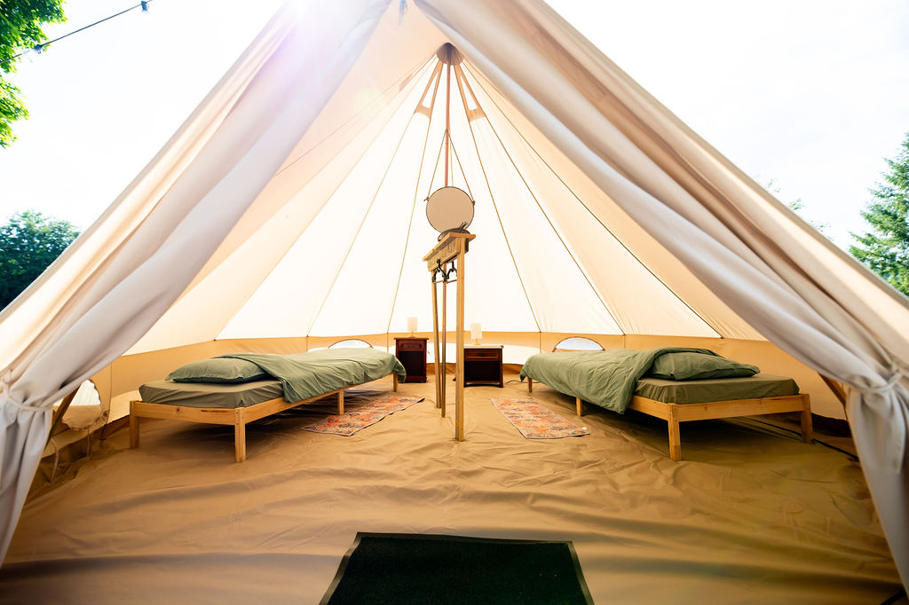
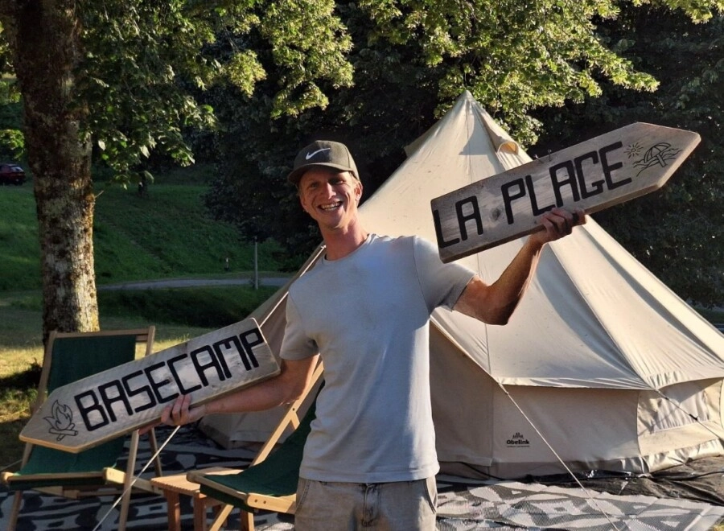
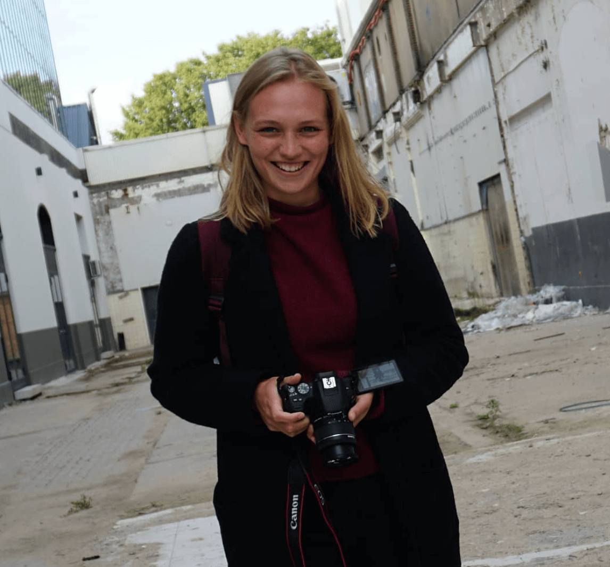
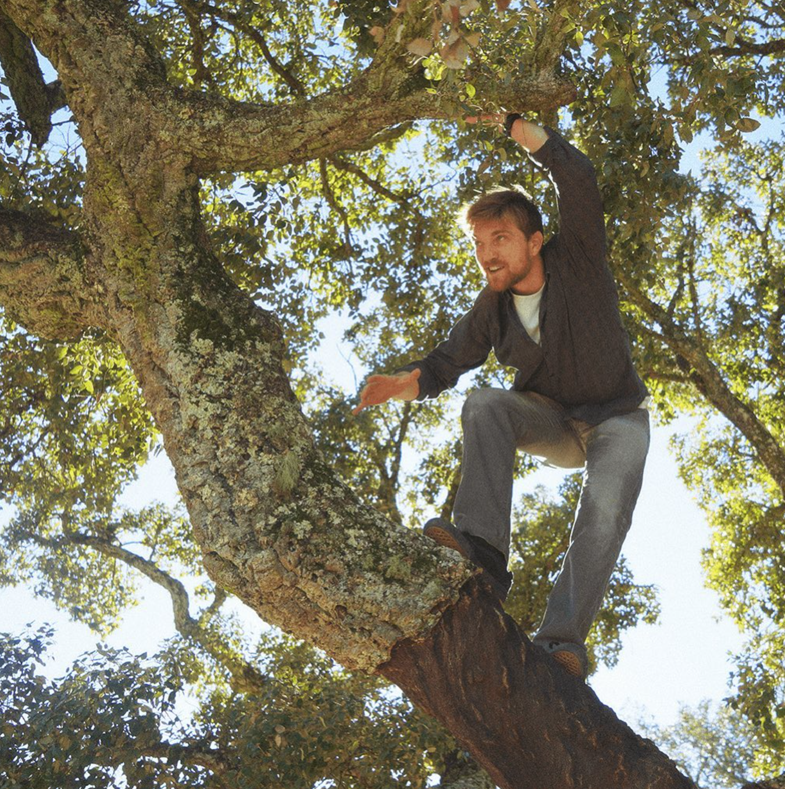
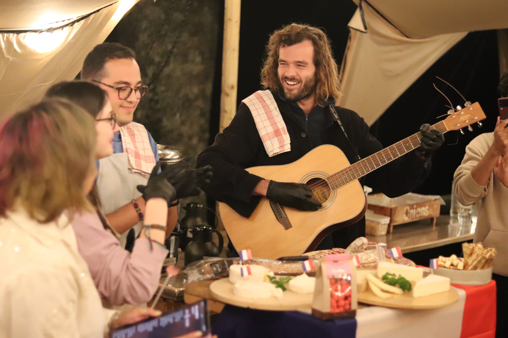
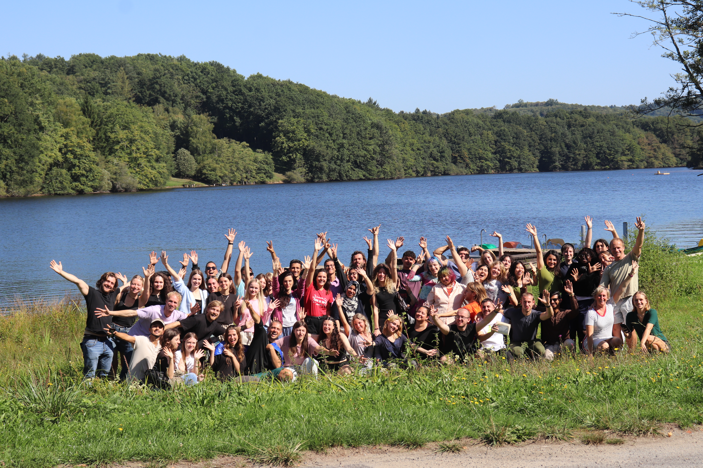

Eight days in rural France with 47 other humans from six countries. No phone. No rush. A week built around presence, movement, silence and real connection — with more than a few surprises we'll leave you to discover when you arrive.
We're keeping the exact activities a little mysterious — last year's participants told us the surprises were the best part. But here's the shape of what you're walking into. Two rhythms run through the whole week: one side leans into physical challenge, outdoor tasks and teamwork. The other side leans into silence, breath and body awareness. Together they make space for you to actually meet yourself.
No phone, almost the whole week. The non-negotiable heart of this exchange. On Day 1 we do a small ritual together — phones go in a box, and they come back to you on the last workshop day. More on this below — read it carefully.
Quiet practices woven through each day. Morning body-and-mind sessions. Breathwork. A different kind of stillness than you're used to. You'll leave with practices you can actually keep using.
Moments designed to take you just outside your comfort zone — in a group that has your back. Trust your body. Surprise yourself.
Forest. Trails. Long walks. Real rural France, met on foot. Most of the week happens under the sky.
One of the days gets quieter than the others. More than that, you'll find out when you're there. People who've done this before say it's the part that lingers most.
Shared meals, long evenings, mixed international teams. Bonfires, games, songs — all the analog stuff that's easier to remember than a feed. Six countries, one long table.
Halfway through Day 1, we gather. You write a short note to your future self, drop your phone in the box, and we close it together. Everyone at the same time. It becomes one of the most quietly memorable moments of the week.
Your group leader keeps a phone for emergencies. Your people at home get our number. You're reachable. You just aren't scrolling.
Boredom on day 2. Sleep getting better. Conversations getting deeper. Time stretching. By day 4 most people don't even want it back.
This is a reel from Portraits of the Soul, last year's youth exchange in the same venue with the same team. Different theme, same spirit. Press play for a peek into the vibe you're signing up for.
Can't see the video? Watch it on Instagram ↗
Bujaleuf, Haute-Vienne — rural south-central France. You'll stay in furnished safari tents on a hillside, with a big communal space for workshops, shared meals and evenings. Forest trails at the door. A lake with a sandy beach a short walk away. A tiny village with a bakery and supermarket.

You'll share a simple tent with 2 or 3 others from across the group. Tents are same-gender. Real beds, soft light, hot showers a short walk away. Yes to table tennis, yes to swimming in the lake if September is kind.
September in rural France is sunny-ish by day, cold at night. Layers are your friend. We cover meals, workshop materials and laundry isn't really a thing — plan for about a week's worth of clothes.

A few years ago Micky sat through a 10-day silent meditation retreat — no talking, no distractions, just stillness. Turned out doing nothing wasn't exactly his thing. But it opened up something real. He brings that calm, supportive space to this exchange, and is the one guiding you through the whole arc of the week.

Joyce loves puzzles (ask her for a riddle) and connecting people. She's your go-to for the infopack, travel tickets, reimbursement questions and logistics — anything practical before the exchange.
On site, she's also the person to come to if anything gets heavy, or if you just want to talk in a safe space.
📱 WhatsApp +31 613 168 581

My life has always revolved around new experiences and expression through art. Now that I started working at the Kunstkerk (translation: Church of Art), I've learned so much from professional artists who work all over the world. I would love to share the same knowledge and passion they've shared with me. Also, I love climbing trees.
One evening is yours — together with your national group. Share a food, a song, a story, a game, a tradition, something that shapes who you are. Not stereotypes — just what's real to you. Bring snacks, small items, music, anything that travels.
48 people · 6 countries · 1 long table.

Your round-trip travel from home to Bujaleuf is covered up to the amount below. Keep your receipts. Always book after Joyce's approval — not before.
🌱 Green travel. Wherever possible, we encourage you to travel by bus, train or carpool. It's better for the planet, often more interesting, and easier than you'd think — especially from the Netherlands and Spain. Joyce will help you figure out the best route.
Limoges has a small airport but flights are rare. Most people fly into Paris (CDG / ORY / BVA) or Bordeaux and take a train or bus to Limoges. Joyce will group-match you with others from your country.
From Paris: ~3h to Limoges Bénédictins. Book via sncf-connect.com. Buses: blablacar.com & flixbus.fr.
We pick you up at Limoges Bénédictins on 9 September and drop you back there on 17 September. There is no other way to reach the venue — travel with your national group.
Get Joyce's approval before booking. Keep originals (tickets, boarding passes, invoices). Fill the form after the event. Take part in all workshops. Submit Youthpass + EU survey + dissemination. Then bank transfer, a few months later.
Erasmus+ funds this because we believe what you learn here belongs to more than just you. Two small but real commitments when you get back:
On social media, in a newsletter, in a voice note to a friend. One honest thing about your week. The quiet parts, the hard parts, the moment that shifted something. Your story may be exactly what someone else needs.
Back home, with your national group. A breathwork session. A silence experiment. A cold exposure evening. A reflection circle. A phone-free dinner. Whatever brings the week home.
Apply through your national organisation. They'll be in touch with next steps and help you figure out travel. Eight people per country, 18–30 years old, motivated humans only.
See you on the hill.
